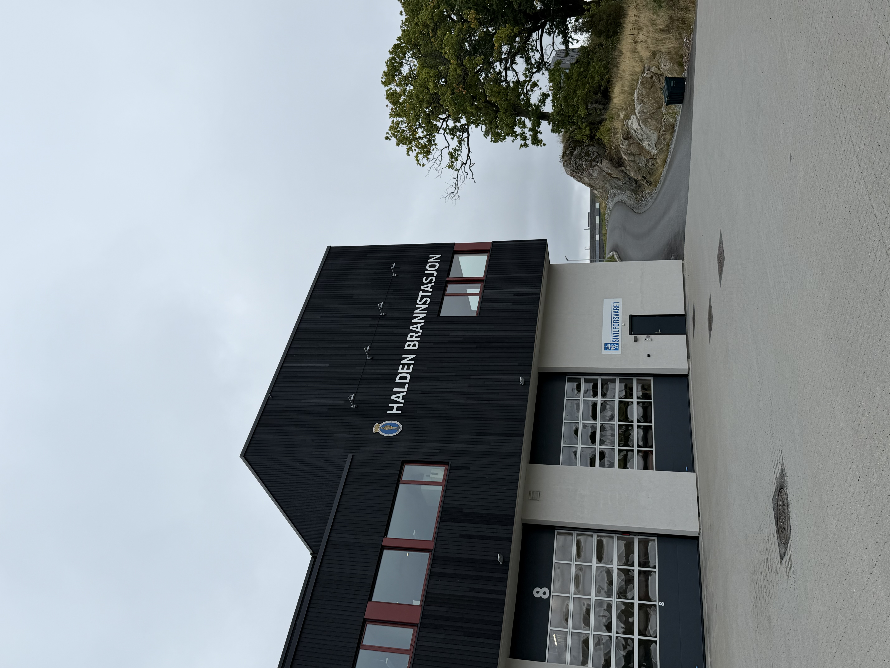

Placeholder title: a local fire station, 1911 to today
Hook
Placeholder — a bell, before there was a siren. Placeholder — a door the whole street could find. Placeholder — a job that outlasted the building. Placeholder — and then the picture goes dark.
Before the city
Placeholder — before the streets caught up
Placeholder section. Replace this copy with the early history, from 1911, in the words your interviews support.

In 1911 the station is still more agreement than architecture. This paragraph is placeholder history: a shed, a bell, neighbours who came when they were called. The final version should say where the first engine was kept, and who was expected to run.
The photograph is standing in for the earliest picture you have. Let it stay large. Warmth in this part of the story belongs to the paper and the picture, not to nostalgia written in advance of the research.
What the town was then, and what it asked of the people who answered the bell, is the substance this opening has to earn. Two or three concrete details will do more than a century summarized in one breath. Leave the difficulty of the later years for the next section.
Change / struggle
Placeholder — the years the station had to argue for itself
There is a long middle in which the old arrangement no longer fits and the new one is not yet allowed. Use this passage for delay, resistance, and the arguments that were not only about a building.
Money belongs here if money was the lever. So does politics, if politics was why a decision stalled. Tie each claim to something a person can remember: a meeting, a refusal, a winter when the equipment was already wrong for the work.
The job itself was changing while the argument went on. Fires, roads, training, and what counted as safe were not the same as in 1911. Tell that shift from inside the work, not only as a list of dates.
The move, when it comes, should feel like the result of that pressure. If the relocation was forced, the interviews will know the difference between a choice and a corner. Say it plainly. Then let the photographs take over.
Before and after

Earlier building

Later building

Today
Placeholder — the station as it is now
The current station gets a cleaner page because the story has arrived in the present. This is placeholder copy for the rooms, the equipment, and the way people speak to each other on an ordinary shift. It should sound different from the historical sections.
The final text can draw on the firefighter who works here now: what the watch looks like, which habits are non-negotiable, and which parts of the job would be unrecognisable to the crew of 1911.

Choose the picture that makes the safety culture visible without a lecture. A labeled rack, a map, a helmet that has clearly been used. Explain only what the picture cannot.
Staffing belongs in this chapter too. Who is on the watch, who is still learning, and which jobs no longer exist. Generational difference can be named here if it helps. Save the last look forward for the ending.
The short journey

Ending
Placeholder — the next watch
The portrait is a placeholder for whichever face should close the story. It may be the trainee, the retired chief, or someone who has not been the focus yet. The page stays quiet so that choice can be simple.
What remains is a short look forward. The station is still answering the same streets, with different equipment and a different idea of what care requires. Replace these sentences with the hope, or the uncertainty, that the interviews actually support.
The story should end as if the reader is being set down gently. No last revelation, and no summary of the whole century. One person, and the work still ahead of them, is enough.